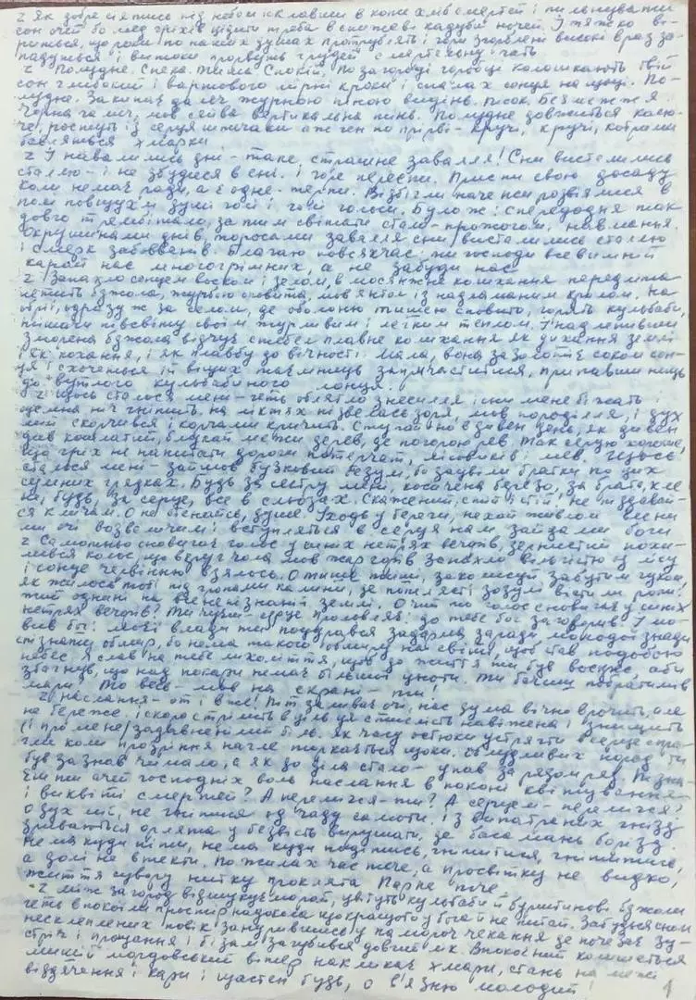
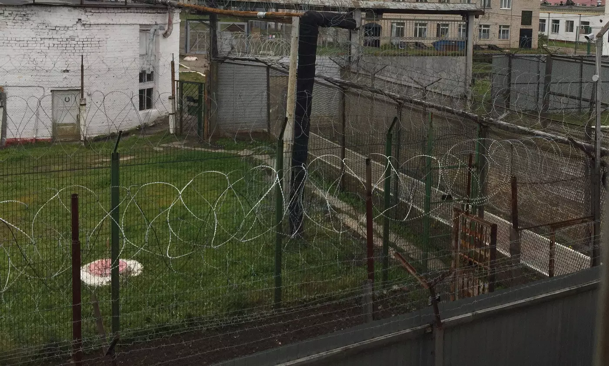

Література є фундаментом національного самоусвідомлення, але в умовах активного терору вона вимагає прямої політичної артикуляції. Василь Стус розумів, що боротьба лише в площині поетичних метафор залишає простір для інтерпретацій. Тоталітарна система живилася страхом і мовчанням; отже, найпотужнішим ударом по ній мала стати публічна, юридично і політично точна деконструкція її злочинів.
Цей намір був реалізований у документі надзвичайної інтелектуальної та політичної ваги — відкритому листі 1975 року, відомому під назвою Я обвинувачую. Цей текст, написаний у нелюдських умовах табірного ув'язнення, вийшов далеко за межі індивідуальної правозахисної скарги. За своєю стилістикою, ідеологічною насиченістю та безкомпромісністю він є звинувачувальним актом усьому російсько-радянському імперіалізму, документом, у якому ув'язнений поет перебрав на себе роль прокурора в історичному трибуналі.
"Я обвинувачую КДБ як організацію відверто шовіністичну й антиукраїнську тому, що вона зробила мій народ і без'язиким і безголосим".
У цьому реченні Стус здійснює концептуальний демонтаж радянської пропаганди. Застосування терміна шовіністична до карального органу інтернаціональної держави знищувало базовий міф СРСР. Стус чітко констатував: репресії не мають класового характеру; вони є інструментом російського великодержавного шовінізму, метою якого є етноцид. Позбавлення народу мови і голосу — це свідома політика денаціоналізації. Стус переводить питання з площини порушення соціалістичної законності в площину національно-визвольної боротьби проти окупаційного апарату.
Переслідування мають не соціальну, а національну природу. Це інструмент великодержавного шовінізму.
Позбавлення народу мови і голосу — свідома політика денаціоналізації, спрямована на знищення української ідентичності.
Визначення карального органу як антиукраїнського руйнувало міф про "інтернаціоналізм" радянської держави.
Питання переводиться з площини юридичних порушень у площину боротьби проти окупаційного режиму.

"Це суди над людською думкою, над самим процесом мислення, суди над гуманізмом, над проявами синівської любові до свого народу".
Аналізуючи хвилю арештів 1972-1973 років в Україні, Стус дає їм вичерпну оцінку. Він доводить, що система карає не за антидержавні дії, а за природну здатність індивіда до рефлексії та за почуття національної гідності. Злочином у Радянському Союзі, за визначенням Стуса, визнається наявність свідомості як такої. Генерація молодої української інтелігенції була репресована виключно за те, що вона намагалася зупинити процес духовної деградації нації.
Лист Я обвинувачую має також глибокий історіософський і геополітичний вимір. Стус та його побратими-дисиденти дійшли фундаментального висновку: Радянський Союз перетворився на військову і поліційну державу, що керується далекосяжними імперськими цілями. Виходячи з цього, будь-який опір цьому режиму не може обмежуватися вимогами лібералізації. Єдиним ефективним рішенням є деколонізація СРСР. Незалежна Україна розглядалася ними як ключовий фактор стабільності, здатний стати надійним захистом Європи від подальшої комуністичної та російської експансії.
Радянський Союз = військова і поліційна держава
↓
Неминучість деколонізації СРСР
↓
Незалежна Україна — захист Європи від російської експансії
У цьому маніфесті Василь Стус категорично відмовився від ролі жертви. Він відкинув нав'язане системою тавро "кримінального злочинця" чи "хулігана", ствердивши своє право на політичну суб'єктність.
Я обвинувачую — це текст, у якому воля окремої людини виявилася сильнішою за весь апарат державного примусу, продемонструвавши, що імперія може знищити фізичне тіло, але вона безсила перед чітко артикульованою ідеєю.
| Елемент маніфесту | Зміст та значення |
|---|---|
| Адресат обвинувачення | Комітет державної безпеки (КДБ) як організація відверто шовіністична й антиукраїнська |
| Суть злочину | Позбавлення народу мови і голосу — політика денаціоналізації та етноциду |
| Характер репресій | Суди над людською думкою, процесом мислення, гуманізмом, любов'ю до народу |
| Політична позиція | Відмова від ролі жертви, утвердження політичної суб'єктності |
| Історичний вирок | Неминучість деколонізації СРСР та утвердження незалежної України |